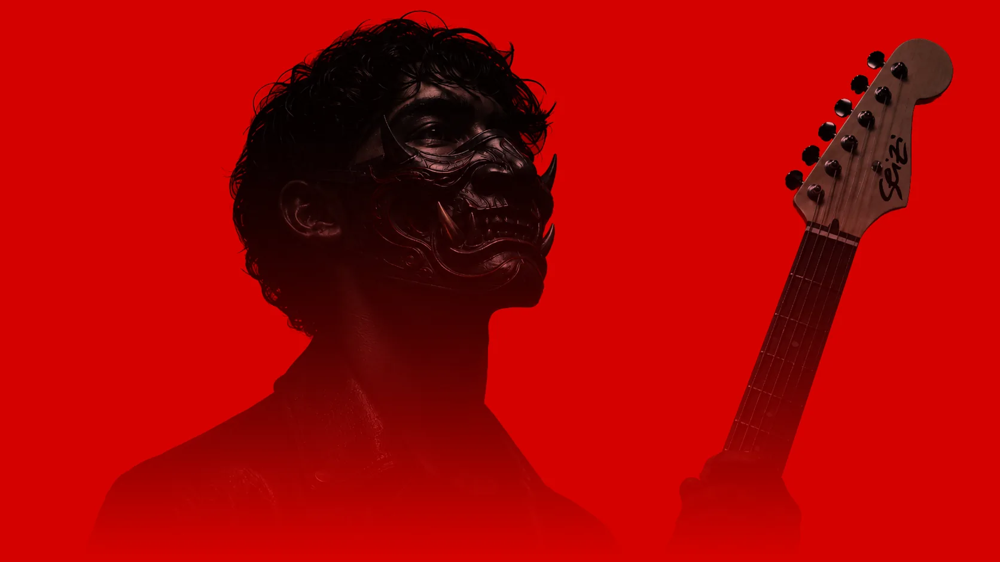
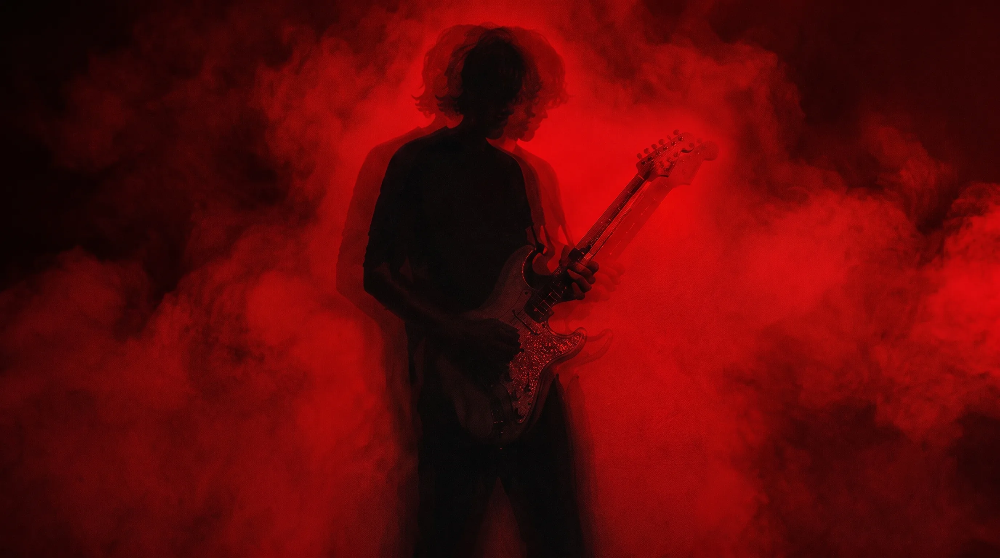
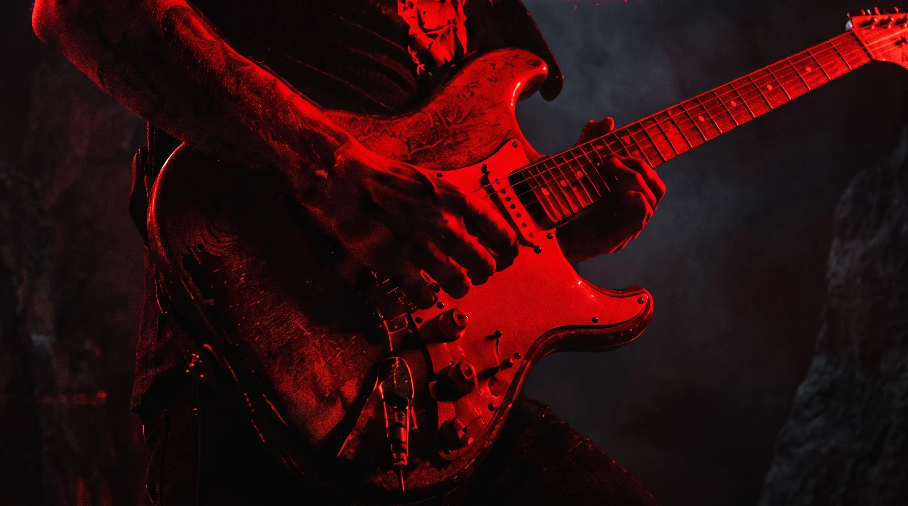
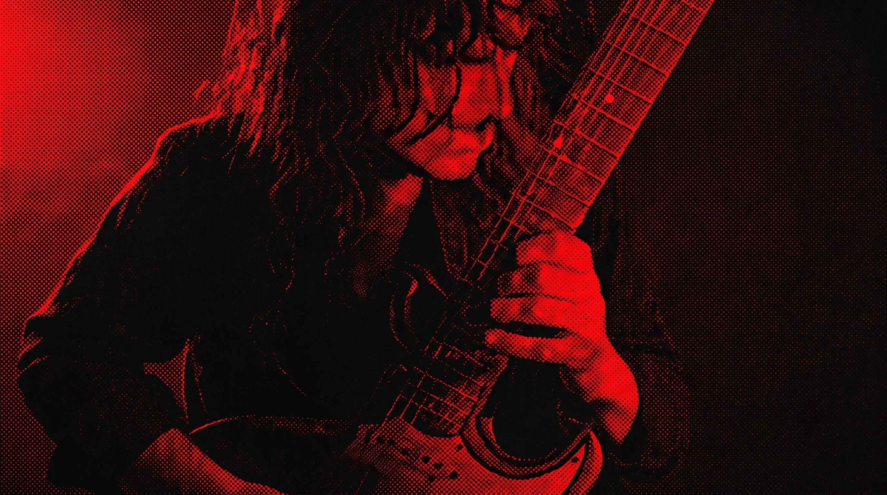
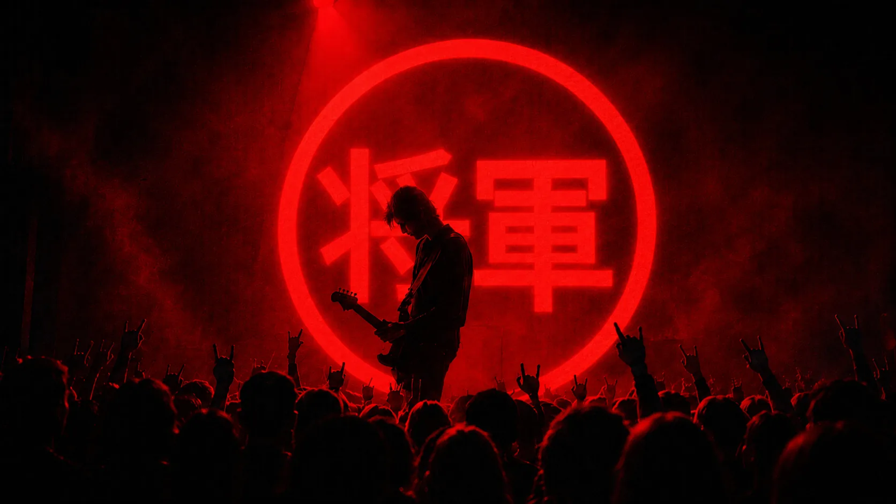

Das audições regionais à grande final. Uma temporada. Um novo samurai.
Role para Começar ↓

Das audições regionais à grande final. Uma temporada. Um novo samurai.
A Seizi migra de fabricante de instrumentos para dona de uma plataforma de mídia, comunidade e talentos — um território que nenhuma marca ocupa no Brasil.
Formato replicável ano a ano, com valorização a cada temporada.
6+ meses de produção contínua alimentando todos os canais da marca.
O próximo artista oficial da Seizi, com storytelling construído em público.
Inscrições, bilheteria, patrocínio e mídia compensando o capex do projeto.

Reality nacional. 9 praças. 16 finalistas em mata-mata até a final em São Paulo — e o público participa da escolha: engajamento vira mecânica do produto.

Cada fase gera receita, conteúdo e audiência própria.
Mata-mata com 16 finalistas: oitavas, quartas, semifinal e grande final — tensão narrativa episódio a episódio.

Endorse oficial Seizi. Guitarra exclusiva. Single completo. Videoclipe. Campanha publicitária. Cada real da premiação retorna como ativo de comunicação da marca.

A pergunta não é se alguém vai criar o maior reality de guitarra do Brasil — é se será a Seizi.